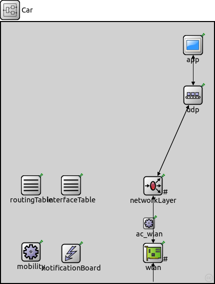
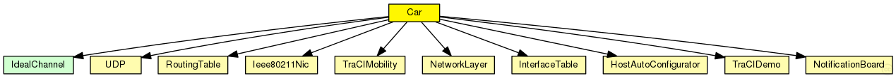

This documentation is released under the Creative Commons license
This documentation is released under the Creative Commons license(no description)
The following diagram shows usage relationships between types. Unresolved types are missing from the diagram. Click here to see the full picture.
The following diagram shows inheritance relationships for this type. Unresolved types are missing from the diagram. Click here to see the full picture.
| Name | Value | Description |
|---|---|---|
| node |
| Name | Direction | Size | Description |
|---|---|---|---|
| radioIn | input |
| Name | Type | Default value | Description |
|---|---|---|---|
| ac_wlan.interfaces | string | "wlan" |
list of interfaces to autoassign addresses to, separated by a single space characters |
| ac_wlan.addressBase | string | "10.0.0.0" |
start of address range from which to automatically assign an address to the autoassignInterfaces |
| ac_wlan.netmask | string | "255.0.0.0" |
netmask of subnet in which to automatically assign an address to the autoassignInterfaces |
| ac_wlan.mcastGroups | string | "" |
list of IP addresses of multicast groups to join, separated by a single space characters |
| interfaceTable.displayAddresses | bool | true |
whether to display IP addresses on links |
| mobility.constraintAreaMinX | double | -1m/0 |
min x position of the constraint area, unconstrained by default (negative infinity) |
| mobility.constraintAreaMinY | double | -1m/0 |
min y position of the constraint area, unconstrained by default (negative infinity) |
| mobility.constraintAreaMinZ | double | -1m/0 |
min z position of the constraint area, unconstrained by default (negative infinity) |
| mobility.constraintAreaMaxX | double | 1m/0 |
max x position of the constraint area, unconstrained by default (positive infinity) |
| mobility.constraintAreaMaxY | double | 1m/0 |
max y position of the constraint area, unconstrained by default (positive infinity) |
| mobility.constraintAreaMaxZ | double | 1m/0 |
max z position of the constraint area, unconstrained by default (positive infinity) |
| mobility.accidentCount | int | 0 |
number of accidents |
| mobility.accidentStart | double | uniform(30s,60s) |
time until first accident, relative to departure time |
| mobility.accidentDuration | double | uniform(30s,60s) |
duration of accident |
| mobility.accidentInterval | double | uniform(30s,60s) |
time between accidents |
| routingTable.forwardMulticast | bool | false |
turns multicast forwarding on/off |
| networkLayer.configurator.networkConfiguratorModule | string | "" |
the absolute path to the IPv4NetworkConfigurator; use "" if there is no configurator |
| networkLayer.configurator.configureRoutingTable | bool | true |
add routing entries to routing table (uses the configurator module) |
| networkLayer.ip.routingTableModule | string | ||
| networkLayer.ip.procDelay | double | 0s | |
| networkLayer.ip.timeToLive | int | 32 | |
| networkLayer.ip.multicastTimeToLive | int | 32 | |
| networkLayer.ip.fragmentTimeout | double | 60s | |
| networkLayer.ip.forceBroadcast | bool | false | |
| networkLayer.arp.routingTableModule | string | ||
| networkLayer.arp.retryTimeout | double | 1s |
number seconds ARP waits between retries to resolve an IPv4 address |
| networkLayer.arp.retryCount | int | 3 |
number of times ARP will attempt to resolve an IPv4 address |
| networkLayer.arp.cacheTimeout | double | 120s |
number seconds unused entries in the cache will time out |
| networkLayer.arp.globalARP | bool | false | |
| networkLayer.arp.deletePackets | bool | true |
if global ARP and enty is not in memory delete the datagram |
| wlan.agent.activeScan | bool | true |
selects between active and passive scanning |
| wlan.agent.channelsToScan | string | "" |
list of channel numbers to scan (space delimited); empty means all channels |
| wlan.agent.probeDelay | double | 100ms |
delay before sending a probe request during active scanning |
| wlan.agent.minChannelTime | double | 150ms |
min interval to spend on a channel during active scanning |
| wlan.agent.maxChannelTime | double | 300ms |
channel time for passive scanning, and max channel time for active scanning |
| wlan.agent.authenticationTimeout | double | 5s |
timeout for the authentication procedure |
| wlan.agent.associationTimeout | double | 5s |
timeout for the association procedure |
| wlan.agent.startingTime | double | -1s |
agent starting time. |
| wlan.agent.default_ssid | string | "" |
default ssid |
| wlan.mac.address | string | "auto" |
MAC address as hex string (12 hex digits), or "auto". "auto" values will be replaced by a generated MAC address in init stage 0. |
| wlan.mac.maxQueueSize | int | 50 |
max queue length in frames; only used if queueModule=="" |
| wlan.mac.saveSize0 | int | 0 |
minum size save for categorie 0, only used if queueModule=="" |
| wlan.mac.saveSize1 | int | 0 |
minum size save for categorie 0, only used if queueModule=="" |
| wlan.mac.saveSize2 | int | 0 |
minum size save for categorie 0, only used if queueModule=="" |
| wlan.mac.saveSize3 | int | 0 |
minum size save for categorie 0, only used if queueModule=="" |
| wlan.mac.EDCA | bool | false |
enable Enhanced Distributed Channel Access (802.11e) |
| wlan.mac.classifier | string | "Ieee80211eClassifier" |
parameters for EDCA = true |
| wlan.mac.maxCategorieQueueSize | int | 50 |
Max queue length in frames per categorie; only used if queueModule=="" |
| wlan.mac.defaultAC | int | 0 |
the default AC category for frames that cannot be classified |
| wlan.mac.AIFSN0 | int | 7 |
AIFSN for background |
| wlan.mac.AIFSN1 | int | 3 |
AIFSN for best effort |
| wlan.mac.AIFSN2 | int | 2 |
AIFSN for video |
| wlan.mac.AIFSN3 | int | 2 |
AIFSN for voice |
| wlan.mac.TXOP0 | double | 0s | |
| wlan.mac.TXOP1 | double | 0s | |
| wlan.mac.TXOP2 | double | 3.008ms | |
| wlan.mac.TXOP3 | double | 1.504ms | |
| wlan.mac.AIFSN | int | 2 |
parameters for EDCA = false |
| wlan.mac.useModulationParameters | bool | true |
if true, slot time, DIFS, and ACK timeout (aPHY-RX-START-Delay) are function of modulation time (2007 standard) |
| wlan.mac.prioritizeMulticast | bool | false |
if true, prioritize multicast frames (9.3.2.1 Fundamental access) |
| wlan.mac.wifiPreambleMode | string | "LONG" |
preamble mode; see IEEE 2007, 19.3.2 |
| wlan.mac.basicBitrate | double | 1e6bps |
used for broadcast frames |
| wlan.mac.controlBitrate | double | 1e6bps |
used for control frames |
| wlan.mac.mtu | int | 2304B | |
| wlan.mac.slotTime | double | 9us | |
| wlan.mac.rtsThresholdBytes | int | 2346B |
longer messages will be sent using RTS/CTS |
| wlan.mac.retryLimit | int | -1 |
maximum number of retries per message, -1 means default |
| wlan.mac.cwMinData | int | -1 |
contention window for normal data frames, -1 means default |
| wlan.mac.cwMaxData | int | -1 |
contention window for normal data frames, -1 means default |
| wlan.mac.cwMinMulticast | int | -1 |
contention window for broadcast messages, -1 means default |
| wlan.mac.phyHeaderLength | double | -1s |
when <0, the MAC will compute it in function of the modulation type |
| wlan.mac.forceBitRate | bool | false |
if true, the MAC will force the bitrate to the physical layer |
| wlan.mac.autoBitrate | int | 0 |
0 = constant bit rate (autobitrate algorithm disabled), 1 = ARF Rate, 2 = AARF Rate |
| wlan.mac.minTimerTimeout | int | 15 |
parameters used by the autobitrate |
| wlan.mac.timerTimeout | int | minTimerTimeout | |
| wlan.mac.minSuccessThreshold | int | 10 | |
| wlan.mac.successThreshold | int | minSuccessThreshold | |
| wlan.mac.maxSuccessThreshold | int | 60 | |
| wlan.mac.successCoeff | double | 2.0 | |
| wlan.mac.timerCoeff | double | 2.0 | |
| wlan.mac.duplicateDetectionFilter | bool | true |
duplicate detection |
| wlan.mac.purgeOldTuples | bool | true |
delete old tuples in the duplicate list |
| wlan.mac.duplicateTimeOut | double | 20s |
timeout for the duplicate detection |
| wlan.mac.throughputTimePeriod | double | 0 |
statistics |
| wlan.mac.multiMac | bool | false |
allows multiples mac interfaces in the same link layer |
| wlan.radio.channelNumber | int | 0 |
channel identifier this radio listens. Works only with simlified management module. Otherwise it scans all the channels as specified in ieee 80211 |
| wlan.radio.carrierFrequency | double | 2.4GHz | |
| wlan.radio.transmitterPower | double | 20mW |
power used for transmission of messages (in mW) |
| wlan.radio.thermalNoise | double | -110dBm |
base noise level (dBm) |
| wlan.radio.sensitivity | double | -85dBm |
received signals with power below sensitivity are ignored |
| wlan.radio.maxDistance | double | -1m |
if the maxDistance is bigger of 0 the sensitivity is adjusted to a maximun reception to this value |
| wlan.radio.setReceptionThreshold | bool | false | |
| wlan.radio.receptionThreshold | double | -110dBm | |
| wlan.radio.maxDistantReceptionThreshold | double | -1m | |
| wlan.radio.NoiseGenerator | string | "" | |
| wlan.radio.pathLossAlpha | double | 2 |
generic FreeSpace model parameters |
| wlan.radio.TransmissionAntennaGainIndB | double | 0dB |
Transmission Antenna Gain |
| wlan.radio.ReceiveAntennaGainIndB | double | 0dB |
Receive Antenna Gain |
| wlan.radio.SystemLossFactor | double | 0dB |
System Loss of Hardware |
| wlan.radio.TransmiterAntennaHigh | double | 1m |
two ray model paramaeters |
| wlan.radio.ReceiverAntennaHigh | double | 1m |
Receiver Antenna High |
| wlan.radio.sigma | double | 1 |
LogNormalShadowingModel |
| wlan.radio.nak_m | double | 1 |
NakagamiModel |
| wlan.radio.K | double | 8dB |
RiceModel |
| wlan.radio.terrain | string | "TerrainB" |
SUIModel |
| wlan.radio.usage_radio_idle | double | -1mA |
battery module parameters (if any of them is negative, the battery module is disabled) |
| wlan.radio.usage_radio_recv | double | -1mA |
disable battery registration |
| wlan.radio.usage_radio_sleep | double | -1mA |
disable battery registration |
| wlan.radio.usage_radio_send | double | -1mA |
disable battery registration |
| wlan.radio.drawCoverage | bool | true |
misc |
| wlan.radio.refreshCoverageInterval | int | 0s |
update period in simulation time for coverage redraw |
| wlan.radio.SensitivityTable | xml | xml(" |
|
| wlan.radio.snirThreshold | double | 4dB |
if signal-noise ratio is below this threshold, frame is considered noise (in dB) |
| wlan.radio.berTableFile | string | "" | |
| wlan.radio.wifiPreambleMode | string | "LONG" |
Wifi preambre mode Ieee 2007, 19.3.2 |
| wlan.radio.errorModel | string | "NistModel" | |
| wlan.radio.btSize | int | 8192b |
test size frame for Airtime Link Metric |
| wlan.radio.airtimeLinkComputation | bool | false | |
| wlan.radio.AutoHeaderSize | bool | false |
in the receiver the radio model compute the header size in function of timers and bitrate |
module Car { parameters: @node(); networkLayer.configurator.networkConfiguratorModule = ""; gates: input radioIn @directIn; submodules: notificationBoard: NotificationBoard { parameters: @display("p=140,462"); } ac_wlan: HostAutoConfigurator { @display("p=296,402"); } interfaceTable: InterfaceTable { parameters: @display("p=140,326"); } app: TraCIDemo { parameters: @display("p=384,46"); } mobility: TraCIMobility { parameters: @display("p=60,459"); } routingTable: RoutingTable { parameters: IPForward = true; routerId = ""; routingFile = ""; @display("p=60,326"); } udp: UDP { parameters: @display("p=384,146"); } networkLayer: NetworkLayer { parameters: proxyARP = false; @display("p=304,327;q=queue"); gates: ifIn[1]; ifOut[1]; } wlan: Ieee80211Nic { parameters: @display("p=304,461;q=queue"); } connections allowunconnected: udp.appOut++ --> app.udp$i; udp.appIn++ <-- app.udp$o; udp.ipOut --> networkLayer.transportIn++; udp.ipIn <-- networkLayer.transportOut++; wlan.upperLayerOut --> networkLayer.ifIn[0]; wlan.upperLayerIn <-- networkLayer.ifOut[0]; radioIn --> wlan.radioIn; }
This documentation is released under the Creative Commons license